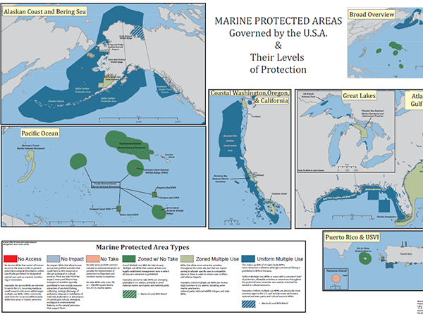

Portfolio
Marine Protected Areas of USA
Marine areas have little to no government oversight or protection. Not only that, but criminal punishment and law enforcement in the open seas is incredibly difficult due to a lack of resources, awareness, and legal capacity.
Alaska Symbolized Population

Here we present the boroughs of Alaska, overlaid with symbolic rings representative of actual population. The larger the ring, the larger the population. Rings can be used in a variety of ways, this is a simple example. :)
Tour de Norway, Shaded Relief

A 21-stage bicycle race of Norway, with a few days in western Sweden. Inspired by le Tour de France, with blended land-use and shaded relief maps as the base layer. This was my first exposure to shaded relief maps and it shows.
Percent Income Spent on Gas

Here we see that the percentage of average weekly income, by county in Maryland, needed to purchase 10G of gasoline varies greatly by county. As such, we can squash the myth that areas of higher income have higher gas prices.
Story Board, Kyoto Protocol

Here we take a brief look at how countries in Europe performed compared to their Kyoto protocol targets. While creating CO2 reduction targets is vital, it's even more important to meet goals.